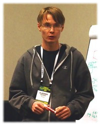

Memory control group fairness
The main problem that remains, according to Vladimir, is fairness. When
the system is under memory pressure, all memcgs are scanned and trimmed in
proportion to their configured limits. But, if one process is creating
lots of inactive pages — by streaming through a large file, for example —
it will claim space from the others. This is not a useful result; it is
causing needed pages to be pushed out in favor of pages that will never be

Johannes Weiner said that this behavior is only a problem if memory is overcommitted on the system. But it tends to come up with workloads like virtualization, for which the entire point is to overcommit the system's resources.
One possible solution would be to adjust each process's memory limits dynamically depending on how much memory pressure is created by each. It is not clear how that pressure would be detected and quantified, though.
Another possibility is to store the time that each page was added to the LRU list, and to track the oldest page on each list. The system could try to achieve an approximate balance of ages. A control-group parameter could configure a minimum age for pages in the list. Only the active list would be affected by this parameter, so it would tend to protect actively used pages over the streamer's pages, which are in the inactive list.
Johannes said that the hard and soft memory limits implemented by memory control groups should be used for this purpose; their whole reason for existence, after all, is to route memory pressure. If the streaming process's limits are set to a relatively low value, it will be trimmed accordingly. The problem is that setting these limits appropriately is not an easy task; there would really need to be a system daemon charged with doing that.
It was suggested that the refault distance work could help in this case. Refault distance is essentially a measurement of a process's working set; it tells how long a process's pages tend to stay paged out before being brought back into working memory. This measurement is a bit too one-sided for this task, though; it can tell when to increase a group's limits, but not when to shrink them.
Another possibility is the vmpressure mechanism, which is meant to notify processes when memory starts to get tight. Michal Hocko said, though, that vmpressure only works well on small systems; on larger systems, pressure tends to look high even when the situation is not that severe.
Johannes said that it might be possible to track how much time processes spend waiting for memory. If a process spends, say, over 10% of its execution time waiting for pages to be faulted back in, its memory limits need to be expanded. The kernel has no such metric at the moment, though, so it's not possible to tell how "healthy" the workload is. Rik van Riel suggested that the same metric could be used to shrink working sets if the wait time goes below a low watermark.
Vladimir concluded the session by saying that he would start by trying to
use the facilities that are available now and add a daemon to try to tweak
the memory limits on the fly.
| Index entries for this article | |
|---|---|
| Kernel | Control groups/Memory controller |
| Kernel | Memory management/Control groups |
| Conference | Storage, Filesystem, and Memory-Management Summit/2016 |